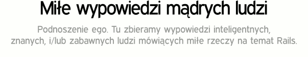
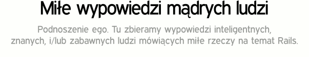

“Rails to najbardziej przemyślany framework do tworzenia aplikacji sieciowych jakiego kiedykolwiek używałem.
Mówię tu o dekadzie zarabiania na życie tworzeniem aplikacji.
Tworzyłem swóje własne framework'i, pomogłem rozwinąć Servlet API i napisałem dosyć sporo serwerów WWW od początku.
Nikomu jeszcze nie udało się stworzyć czegoś takiego jak Rails.”
-James Duncan Davidson, Twórca Tomcat'a i Ant'a
“Ruby on Rails jest przełomem w dziedzinie programowania aplikacji internetowych.
Potężne aplikacje, których tworzenie do tej pory zabierało tygodnie czy miesiące,
są teraz tworzone dosłownie w kilka dni.”
-Tim O'Reilly, Założyciel O'Reilly Media
“Niemożliwym jest nie zauważyć Ruby on Rails. Rails miały ogromny wpływ na
społeczność Rubiego jak i poza nią... Rails stały się standardem do którego nawet
znane i popularne narzędzia są porównywane.”
-Martin Fowler, Autor książek "Refactoring, PoEAA, XP Explained"
“To co odróżnia ten framework od innych to przewaga
konwencji nad konfiguracją, która ułatwia budowę i zrozumienie aplikacji.”
-Sam Ruby, zarząd ASF
“Przed powstaniem Ruby on Rails, programowanie aplikacji internetowych wymagało sporo rozwlekłości, kroków i czasu.
Teraz projektanci web i programiści mogą stworzyć serwis internetowy
o wiele szybciej i prościej, skupiając się bardziej na tym jak być bardziej produktywnym
i efektywnym w swojej pracy.”
-Bruce Perens, Open Source Luminary
“Po zbadaniu rynku, Ruby on Rails okazały się być najlepszym wyborem.
Jesteśmy zadowoleni z tej decyzji. Dalej będziemy tworzyć
przy użyciu Rails i uważamy Rails za kluczowy składnik naszej przewagi biznesowej.”
-Evan Williams, Twórca Blogger'a i ODEO
“Ruby on Rails jest zdumiewający. Używanie Rails jest jak oglądanie filmu kung-fu ,
gdzie złe frameworki przygotowują się na skopanie małego przybysza
i okazuje się że mały przybysz kopie ich tyłki na tysiąc różnych sposobów.”
-Nathan Torkington, O'Reilly, OSCON
“Rails to "zabójcza aplikacja" Rubiego.”
Yukihiro Matsumoto, Twórca języka Ruby
 
